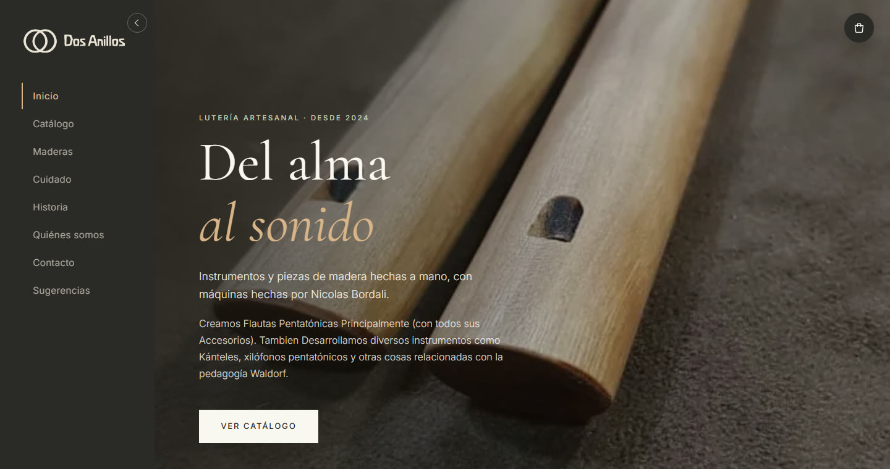

> cliente: dosanillos.cl_
Una tienda online para
flautas hechas a mano
Dos Anillos es el taller de Nicolás Bordalí: flautas pentatónicas e instrumentos de madera para la pedagogía Waldorf.

🛒
Tienda online
Paga con Mercado Pago y recibe en todo Chile.
🌳
9 maderas
Cada madera explicada, del cerezo al raulí.
🎶
Guía de cuidado
Paso a paso para mantener tu flauta.
benedettowebs.clsabenedettoa@benedettowebs.cl
Visita dosanillos.cl ›